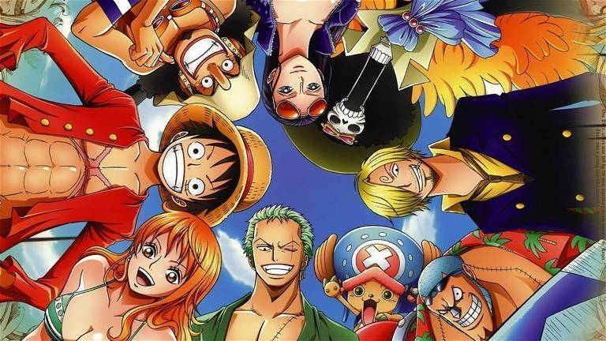
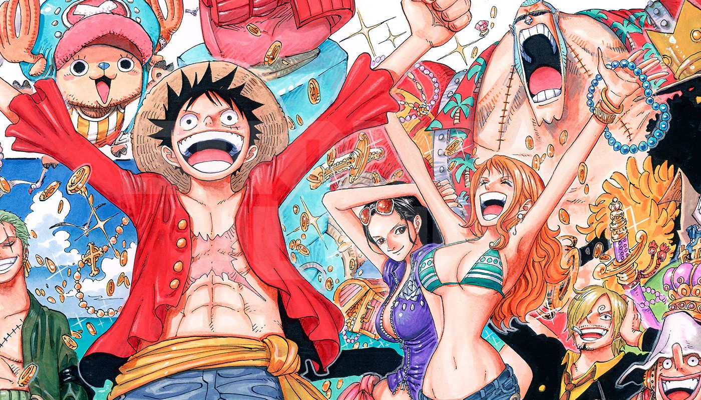

¿QUE ES ONE PIECE?

One Piece es un manga y anime japonés que ha alcanzado un estatus icónico en la cultura
popular. Creada por Eiichiro Oda, la serie narra las aventuras del intrépido Monkey D.
Luffy y su ecléctica tripulación en busca del tesoro legendario conocido como el
"One Piece". La trama se desenvuelve en un vasto mundo lleno de islas, mares peligrosos
y personajes memorables. Más allá de sus cautivadoras batallas y tramas complejas, One
Piece se distingue por su narrativa rica en valores como la amistad, la determinación y
la búsqueda de sueños. A lo largo de sus más de dos décadas de existencia, la obra ha
dejado una huella perdurable en el medio, no solo por su narrativa magistral y su
desarrollo de personajes, sino también por su capacidad para explorar temas profundos
y universales a través de la lente de la fantasía y la aventura. One Piece se erige
como un hito cultural que ha cautivado a audiencias globales, trascendiendo las barreras
del género y estableciéndose como una obra maestra del género shōnen.
POR QUE VER ONE PIECE

One Piece emerge como una obra maestra del anime que va más allá de la pantalla para ofrecer una experiencia cautivadora y transformadora. En el corazón de esta epopeya marítima se encuentra una narrativa épica que se despliega a través de vastos océanos, islas enigmáticas y personajes entrañables. La serie no solo deleita con sus emocionantes batallas y tramas complejas, sino que también teje una rica tela de valores universales.
A medida que te sumerges en el mundo de One Piece, te encuentras con una tripulación diversa liderada por el intrépido Monkey D. Luffy. Cada miembro de la tripulación aporta su propia historia, complejidad y singularidad a la trama, creando un tapiz humano que resalta la fuerza de la amistad y la lealtad.
Lo distintivo de One Piece radica en su capacidad para transmitir mensajes inspiradores y universales. A través de la determinación inflexible de los personajes para alcanzar sus sueños, la serie resuena con temas de perseverancia, superación personal y la importancia de creer en uno mismo.
Este viaje no solo es una experiencia visual, sino también un viaje emocional. Desde momentos de risas contagiosas hasta lágrimas conmovedoras, One Piece te sumerge en un torrente de emociones que deja una marca indeleble en tu corazón.
En definitiva, One Piece no es simplemente una serie de anime; es una odisea que trasciende las fronteras del entretenimiento. Es una celebración de la diversidad, un recordatorio de la fuerza interior y una invitación a soñar sin límites. Embarcarte en esta aventura es sumergirte en una narrativa que no solo entretiene, sino que también inspira y deja una impresión duradera en el alma del espectador.
DIFERENTES ARCOS DE ONE PICE

Arco de Romance Dawn

Conocemos a Monkey D. Luffy y su sueño de convertirse en el Rey de los Piratas. Este arco establece la base para la búsqueda del tesoro legendario conocido como el "One Piece".
Arco de Arabasta

Lleva a la tripulación de los Sombrero de Paja al desierto, donde deben desafiar a la Baroque Works y salvar el reino de Arabasta de la conspiración.
Arco de Enies Lobby

Se centra en la rescisión de Nico Robin mientras la tripulación enfrenta a la CP9 para salvar a su compañera y enfrentarse a la amenaza del Gobierno Mundial.
Arco de Marineford

Alcanza su punto culminante con la guerra entre la Marina y los Piratas de Barbablanca, un enfrentamiento épico que tiene consecuencias masivas en el mundo de One Piece.
Arco de Dressrosa

Se sumerge en una isla gobernada por Donquixote Doflamingo, donde Luffy y su tripulación deben liberar al pueblo oprimido y desmantelar la red de tráfico de personas.
Arco de Whole Cake Island

Lleva a los Sombrero de Paja a la isla de Big Mom en una misión arriesgada para rescatar a Sanji y asegurar la alianza con la Germa 66.
Arco de Wano

Transporta a la tripulación a un país samurái sumido en el caos, donde se enfrentan al despiadado Kaido y su banda de piratas, buscando liberar a Wano y cambiar el curso de la historia.